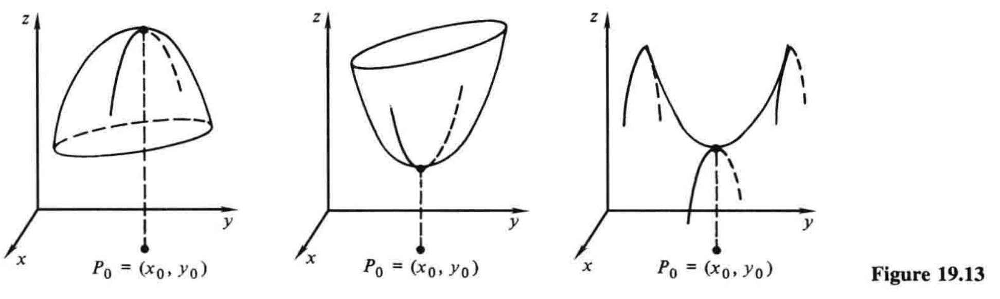

19.7 最大值与最小值问题¶
\(\newcommand{\p}{\partial}\)
在单变量函数的情形中，导数的一个主要应用就是研究最大值和最小值. 在第4章，我们建立了基于一阶导数和二阶导数的一些判别法，我们利用这些判别法来作函数图像，并解决大量几何和物理问题. 两个或多个变量的最大值和最小值问题则复杂得多. 这里我们仅初步涉猎这些问题，包括两个变量版本的二阶导数判别法（4.2节注记3）.
设函数\(z=f(x,y)\)在定义域的一内点\(P_0=(x_0,y_0)\)处有最大值. 这意味着\(f(x,y)\)有定义，并且在\(P_0\)的某个邻域内有\(f(x,y) \le f(x_0,y_0)\)，如图19.13左所示.1 如果我们在\(y_0\)处保持\(y\)不变，那么\(z=f(x,y_0)\)就只是\(x\)的函数，又由于它在\(x=x_0\)处有最大值，如第4章所述，它在此处的导数必为零. 也就是该点处\(\p z/\p x=0\). 同理，该点处\(\p z/\p y=0\). 因此方程
就是在最大值点\((x_0,y_0)\)满足的关于两个未知数的方程. 很多时候，我们可以联立解出这两个方程，从而求出点\((x_0,y_0)\)，再求出函数实际的最大值.

同样的考虑也完全适用于最小值，如图中间所示. 然而，当我们试图通过解方程\((1)\)来确定函数的最大、最小值时，必须注意到，这两个方程在一个鞍形点也成立，如图右所示，此处函数在一个方向上有最大值，在另外某个方向上有最小值. 方程\((1)\)只能说明切平面是水平的，至于这个事实意味着什么，则需要我们来判断.
类似于我们早前在第4章中基于单变量函数的定义，我们称使得两偏导数都为\(0\)的点\((x_0,y_0)\)为\(f(x,y)\)的一个临界点2.
例1 一个无顶的长方体盒子有固定体积\(4 \,\mathrm{ft}^3\)，找出能够使得它具有最小表面积的三边长.
解 若\(x\)和\(y\)是底面的边长，\(z\)是高，那么面积就是
因为\(xyz=4\)，我们有\(z=4/xy\)，化简后的面积就可以写成两个变量\(x\)和\(y\)的函数
我们寻找这个函数的一个临界点，即这样一个点，使得
联立解这两个方程，先写成
两式相除，得\(x/y=1\)，所以\(y=x\)，两个式子都变成\(x^3=8\). 因此\(x=y=2\)，据此又可得\(z=1\)，所以盒子面积的最小值就等于正方形底面乘以底边边长的一半.
这个例子中，几何上很明显，临界点\((2,2)\)实际上就是最小值点，而不是最大值点或者鞍形点. 不过，在更复杂的情形中，我们可能找到一个单凭常识完全说不清本质的临界点. 判明临界点的一个有用的工具，就是二阶导数判别法：
二阶导数判别法
若\(f(x,y)\)在点\((x_0,y_0)\)的邻域中有连续二阶偏导数，并且定义一个数\(D\)为
那么\((x_0,y_0)\)就是
- 一个最大值点，当\(D \gt 0\)且\(f_{xx}(x_0,y_0) \lt 0\)；
- 一个最小值点，当\(D \gt 0\)且\(f_{xx}(x_0,y_0) \gt 0\)；
- 一个鞍形点，当\(D \lt 0\).
进一步而言，若\(D=0\)，那么无法得出任何结论，1—3中的任何情况都可能发生.
这个定理的完整证明需要我们无法使用的数学工具. 我们建议感兴趣的学生额外读些进阶书籍. 3
例1（续） 作为使用二阶导数判别法的一个示范，我们将其用于验证在例1中求得的临界点\((2,2)\)是函数\((2)\)的一个最小值点. 此处我们有
因此判别式\((3)\)的值为\(D=2\cdot 2-1^2=3 \gt 0\). 又因\(A_{xx}\)在点\((2,2)\)处也是正的，判别法告诉我们，该临界点确实是最小值点，正如预期.
例2 求函数
的临界点，并运用二阶导数判别法说明其性质.
解 我们有
所以我们要解的方程组是
简便起见，观察得\(x=-2\)，\(y=1\)，所以只有一个临界点\((-2,1)\). 在这一点，我们有
又因为\(z_{xx}=6 \gt 0\)，故临界点是最小值点.
成功求出函数\(z=f(x,y)\)的最大值和最小值，显然有赖于解联立方程\(f_x=0\)和\(f_y=0\)的能力. 在例1和例2中，这些方程易于解出. 然而，学生也很容易想到，在很多复杂的情形中，常规的解联立方程的方法收效甚微. 我们只能给出的一般性建议就是，尝试从其中一个方程接触一个未知数，将这个解代入第二个方程中，然后尝试解出结果. 此外，多猜想、多出奇制胜——给建议简单，遵循建议难啊！